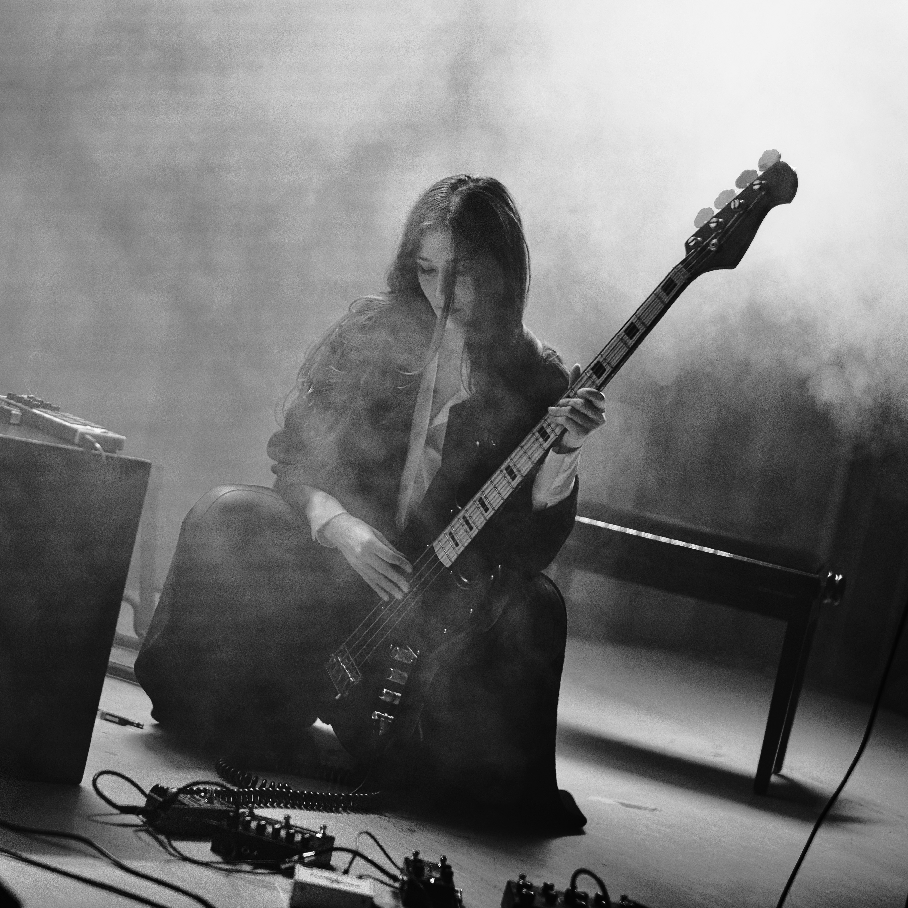

is a Berlin-based multidisciplinary artist working across music, film, and performance. Exploring transformative dimensions of sound, grief, and memory, she crafts cinematic compositions from atmospheric, multi-instrumental soundscapes, field recordings, dynamic vocals, and sculptural breath. Moving between dark distortion and poetic fragility, her performances unfold with introspective yet visceral intensity.